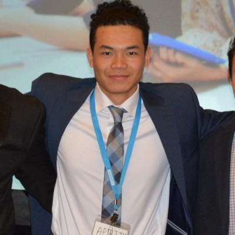

About
Building things with a mix of precision and curiosity.
I work between technical craft and creative product thinking: design, prototyping, machine logic, and music all share the same discipline.
My story
I grew up in Cambodia for half my life, shaped by interests in film, art and science I made a 3D horror game in Unity as a kid, designed an auditory app that switches sound based on GPS location and spent years on community work: building libraries, planting trees, donating supplies.
That range shows up in my portfolio as CAD studies, product ideas, and audio experiments. Each one reinforces the same habit: practical exploration paired with intentional design. That impulse to build things, whether in code, clay, or pixels, led me to engineering, then into product. Now I'm a TPM who still codes because the best way to ship something is to understand how it's made.
Right now I'm drawn to portable and wearable tech: the constraint of building something you wear, that travels with you, that has to be both functional and beautiful. Smartwatches, smart glasses, tablets devices that sit at the edge between you and the world. That's the work I want to do: design and build things people wear.
